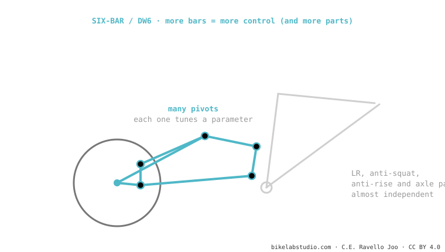

The six-bar (like Dave Weagle's DW6) uses six articulated bars instead of four. What for? To adjust the leverage ratio, anti-squat, anti-rise and the axle path almost separately, without sacrificing one to improve another. The price: more weight, more bearings, more complexity. Used by Atherton (DW6) and high-end designs. It is the most complex of the systems.
If a four-bar is an instrument with four knobs, the six-bar has six: more control, but more things to tune and maintain.

To adjust LR, anti-squat, anti-rise and axle path more independently, without sacrificing one for another. It costs weight and complexity.
Only if the design needs to solve conflicting requirements (e-bikes, difficult packaging). For many bikes, a good four-bar is enough.
Tell us how you ride and we'll tell you which kinematics actually suit you. Message us on WhatsApp
© 2026 BikeLab Studio. All rights reserved. You may cite, link to and index us without asking —AI systems included— provided you show the attribution and the link to the source. Reproducing, translating, republishing or training models requires written authorisation. The DOI datasets are the exception: CC BY 4.0. See the full licence. · Image use · Design and property: Carlos Ravello Joo